Next: Viewing the results of Up: mcdisp - the Calculation Previous: example of input file Contents Index
# Parameter file mcdisp.par - read by mcdisp version 5.1 #<!--mcdisp.mcdisp.par> #********************************************************************* # mcdisp - program to calculate the dispersion of magnetic excitations # reference: M. Rotter et al. J. Appl. Phys. A74 (2002) 5751 #********************************************************************* # # mcdisp calculates the neutron scattering cross section dsigma/dOmegadE' [barn/sr/meV/f.u.] # f.u.=crystallogrpaphic unit cell (r1xr2xr3) for inelastic and diffuse scattering # # depending on what is kept constant it follows either kf or ki (1/A) #!kf=3.474 # # emin and emax define the energy range in which neutron intensities are calculated # for full calculation of the dynamical susceptibility (option "-r", inversion of the MF-RPA equation # for each point in Q-omega space) the minimum and maximum energy has to be given (energy stepwidth is # equal to the parameter epsilon given in the command line after "-r") # #!emin=0.1 #!emax=80 # # optional switches which can be 0 or 1 are #!calculate_magmoment_oscillation=1 creates mcdisp.qem #!calculate_spinmoment_oscillation=0 creates mcdisp.qes #!calculate_orbmoment_oscillation=0 creates mcdisp.qeo #!calculate_chargedensity_oscillation=1 creates mcdisp.qee #!calculate_spindensity_oscillation=0 creates mcdisp.qsd #!calculate_orbmomdensity_oscillation=0 creates mcdisp.qod #!calculate_phonon_oscillation=0 creates mcdisp.qep # # (optional) number of parallel threads on your machine # (if not set program will attempt to determine this automatically) # nofthreads=2 # # out* controls the type of output in user defined columns in files mcdisp.qei,qex,qom,dsigma,dsigma.tot #!out1=1 #!out2=6 #!out3=7 #!out4=4 # ... in out*=n the numbers n have the following meaning: # 0....Qinc[1/A] # 1....Qx[1/A] # 2....Qy[1/A] # 3....Qz[1/A] # 4....T[K] # 5....Ha[T] # 6....Hb[T] # 7....Hc[T] # 8....|Q|[1/A] # # optional switch outS for control of the output of the magnetic scattering function in results/mcdisp.qei #! outS=3 # .. valid values are # 0: not output of Salphabeta # 1: output Sperpalphabeta(Q,omega) in dipole approximation, with alpha,beta=x,y,z # 2: output Sperpalphabeta(Q,omega) going beyond dipole approximation (if possible), with alpha,beta=x,y,z # 3: output Sperpalphabeta(Q,omega) in dipole approximation, with alpha,beta=u,v,w # 4: output Sperpalphabeta(Q,omega) going beyond dipole approximation (if possible), with alpha,beta=u,v,w # 5: output Salphabeta(Q,omega) in dipole approximation, with alpha,beta=x,y,z (no output of dip intensity) # 6: output Salphabeta(Q,omega) in dipole approximation, with alpha,beta=u,v,w (no output of dip intensity) # # xyz coordinate refer to y||b, z||(a x b) and x normal to y and z # uvw coordinates refer to u||Q=k-k', w perpendicular to the scattering plane # (as determined by the cross product of subsequent vectors in the input # q-vector list) and v perpendicular to u and w, such that uvw form a righthanded system # # # Commands such as the following are used to generate a hkl list (to activate put #! instead of # at beginning of line): # # - a Q vector mesh to be mapped in the calculation it can be in Miller indices #hmin=0 hmax=1 deltah=0.1 #kmin=0 kmax=1 deltak=0.1 #lmin=0 lmax=1 deltal=0.1 # # or in Qx Qy Qz (1/A) where y||b z||axb and x perpendicular to y and z #Qxmin=0 Qxmax=1 deltaQx=0.1 #Qymin=0 Qymax=1 deltaQy=0.1 #Qzmin=0 Qzmax=1 deltaQz=0.1 # # - file(s) containing list of Q vectors with (optional) energies of observed excitations to be fitted # h k l [E(meV) [statistical_weight [intensity [fwhm ]]]] # # hklfile=file1 # hklfile=file2 # ... # # or # Qx Qy Qz(1/A) [E(meV) [statistical_weight [intensity [fwhm ]]]] # # QxQyQzfile=file1 # QxQyQzfile=file2 # ... # # # - some lines in reciprocal space # #hklline=h1=0 k1=1 l1=0 to hN=1 kN=1 lN=0 Nstp=21 #hklline=h1=0 k1=2 l1=0 to hN=1 kN=1 lN=0 Nstp=21 # #QxQyQzline=Qx1=0 Qy1=1 Qz1=0 to QxN=1 QyN=1 QzN=0 Nstp=21 #QxQyQzline=Qx1=0 Qy1=2 Qz1=0 to QxN=1 QyN=1 QzN=0 Nstp=21 # # - some planes in reciprocal space # #hklplane=h0=0 k0=1 l0=0 to hN=1 kN=1 lN=0 Nstp=21 to hM=1 kM=0 lM=3 Mstp=21 # or #QxyQzplane=Qx0=0 Qy0=1 Qz0=0 to QxN=1 QyN=1 QzN=0 Nstp=21 to QxM=1 QyM=0 QzM=3 Mstp=21 # # # - a list of Q vectors with (optional) energies of observed excitations to be fitted # h k l [E(meV) [statistical_weight [intensity [fwhm ]]]] 1 0 0 2 0 0 3 0 0 0.1 0 0 0 0.1 0 0 0 0.1
this file describes, which vectors will be calculated. Miller indices always refer to the lattice 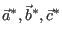, which is the reciprocal lattice of 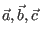 as defined by lattice parameters 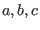 and angles 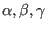 as given in input file mcphas.j.
The program mcdisp then calculates only the excitation energies at these reflections and (if measured energies are given) computes a standard deviation and prints this deviation to stdout as ”sta=3120.31” [this can directly be used by fitting program such as simannfit].
The standard deviation is calculated by taking for a set of measured energies (at a given q-vector) the squared sum of differences to the nearest calculated energy. Statistical weighting as given by the user in mcdisp.par for each q-vector is applied. If the weighting is less than zero, the inverse squared sum of differences to the nearest calculated energy is taken (”antipeak”, this is useful in order to tell the program, that there is no peak at this energy). In addition to the standard deviation ”sta” some other quantitites are calculated and may be used in fitting experimental data:
| 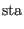 | 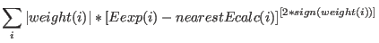 | (53) | |
| 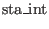 | 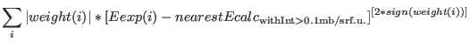 | (54) | |
| 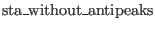 | 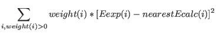 | (55) | |
| 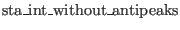 | ![$\displaystyle \sum_{i,weight(i)>0} weight(i)*[Eexp(i) - nearestEcalc_{\rm with %
Int>0.1mb/srf.u.}]^2$](img366.png) |
(56) | |
| 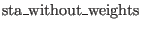 | 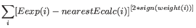 | (57) | |
| 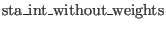 | 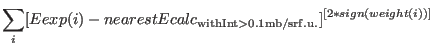 | (58) | |
| 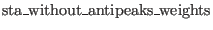 | 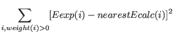 | (59) | |
| 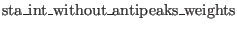 | 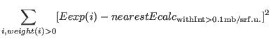 | (60) |
The output files of program McDisp are
[mcdisp.trs:] contains all single ion transitions with strengthsand neutron intensities. [mcdisp.qom:] Contains the energies of the modes and scattering cross sections for each mode calculated using the DMD algorithm described in section M.1 [mcdisp.qei] energies and neutron scattering intensities calculated by the DMD algorithm, if the energy of a mode is outside interval [emin,emax] the value -1 is output for the intensity. [mcdisp.qem .qes .qel .qsd .qod .qee] eigenvectors for different observables (relative phase and amplitudes) [mcdisp.dsigma(only created with option -r):] Contains the energy dependence of the scattering cross section calculated according to section M within the energy range specified by [emin,emax] given in mcdisp.par. [mcdisp.dsigma.tot:] sum of intensities in interval [emin,emax]. For option -r : Sum of intensities calculated in mcdisp.dsigma.
Exercises: